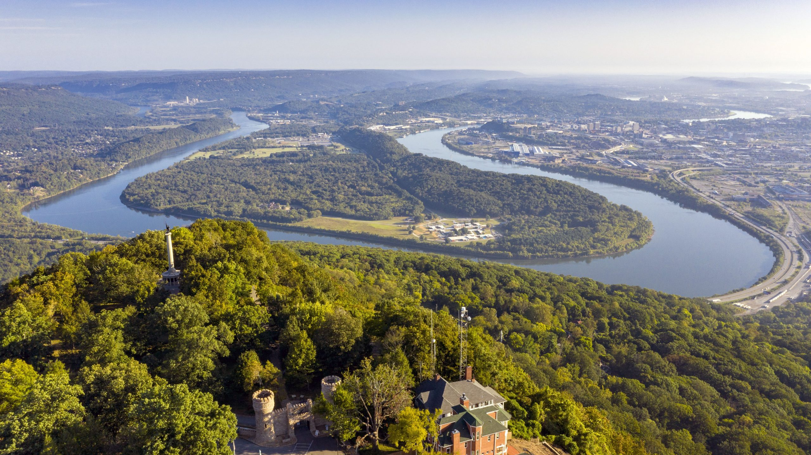
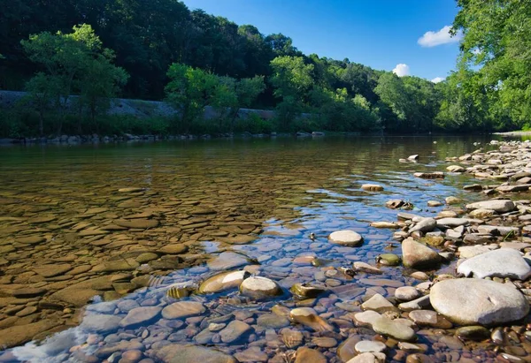
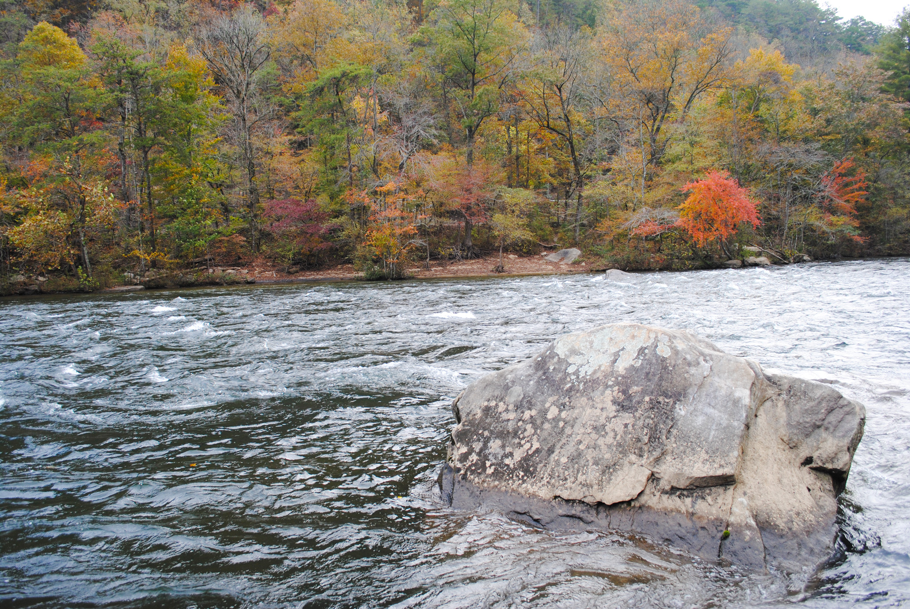
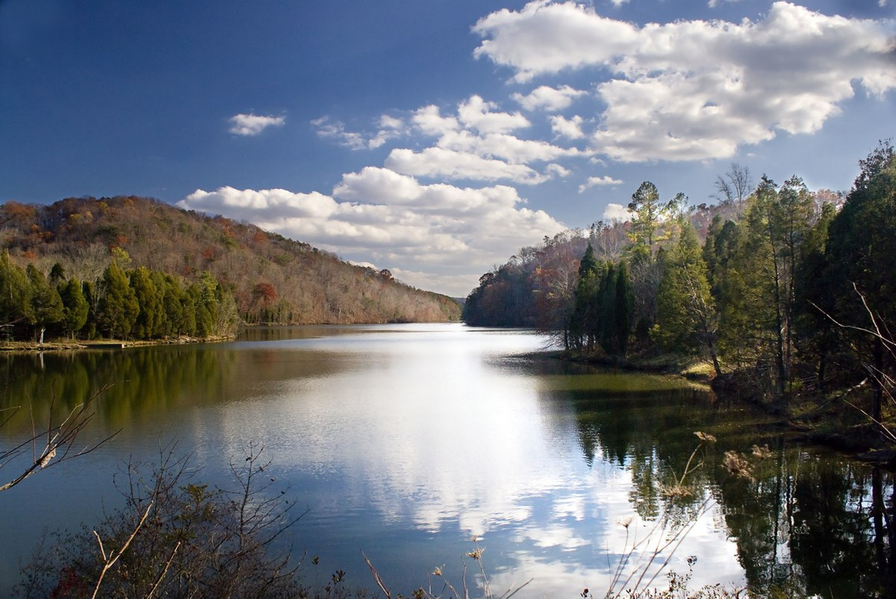
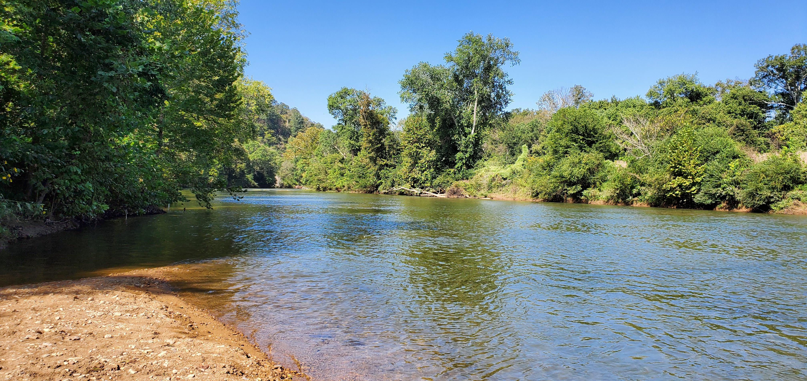
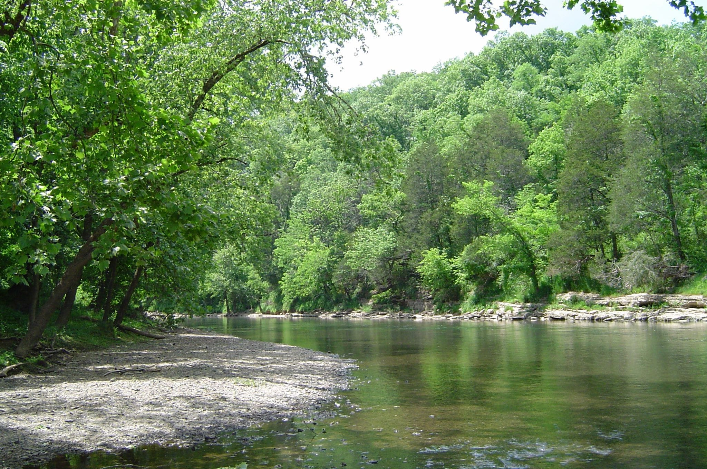
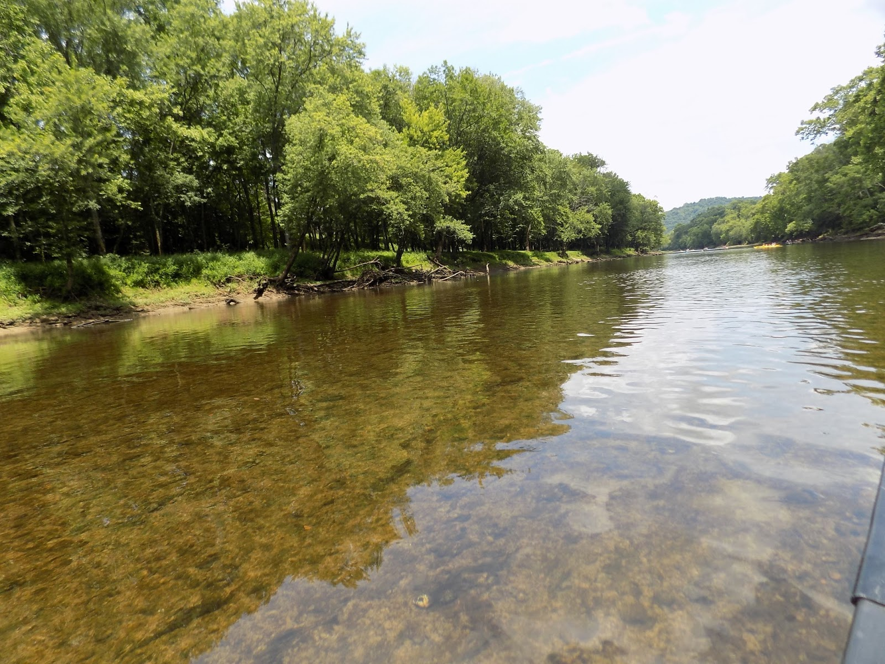
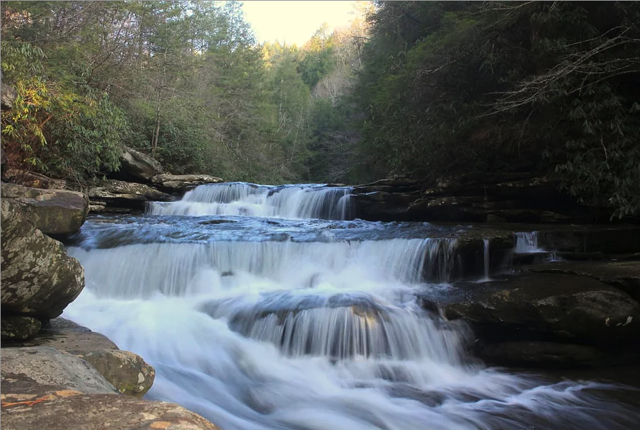
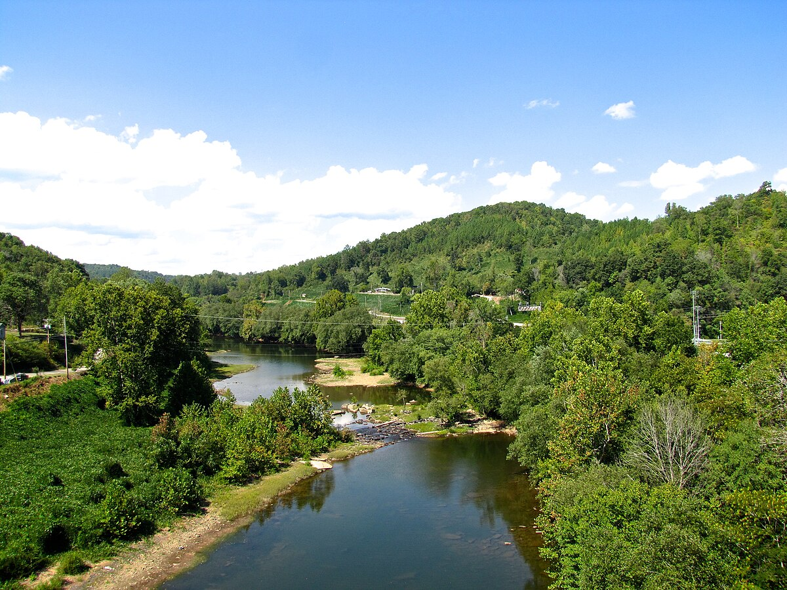
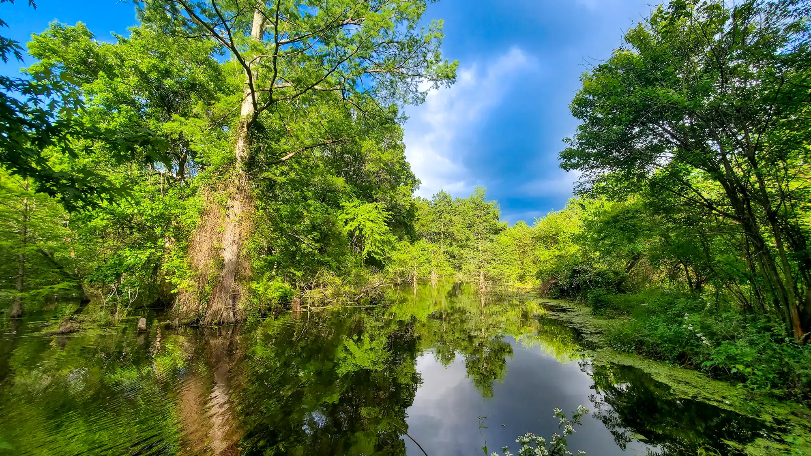

1 / 10

In 2004, the Tennessee River was named the fourth most polluted river in the United States by the American Rivers conservation group.
2 / 10

The Cumberland River in Tennessee meets EPA standards for drinking, swimming, and fishing.
3 / 10

The Hiwassee River is designated as a Tennessee State Scenic River, and is well-suited for canoeing, rafting, and learning the basics of whitewater boating.
4 / 10

Before being dammed, the Clinch River was a major producer of freshwater mussels and pearls.
5 / 10

The Harpeth River and its tributaries are home to rich freshwater biodiversity, including more than 50 species of fish and 30 species of mussels.
6 / 10

Upper Elk is a geological marvel: A subterranean network of caves, streams, and waterfalls, including a six-mile stretch in Randolph County where, in dry weather, the river sinks underground.
7 / 10

The dam at the Caney River has caused low dissolved oxygen (DO) in the tailwater (section of river below a dam), violating Tennessee's water quality criteria and degrading significant trout habitat.
8 / 10

The free-flowing Obed Wild & Scenic River and its 500-foot-deep gorges offer visitors unspoiled rugged terrain, exceptional waters, and outdoor adventure.
9 / 10

The Emory River is a river draining a portion of Tennessee's Cumberland Plateau. It flows for just over 46 miles (74 km) from its source near Frozen Head State Park to its mouth along the Clinch River at Kingston, Tennessee.
10 / 10

The Ghost River section of the Wolf River received its name from the loss of river current as the water "flows" through open marshes and bald cypress-water tupelo swamps.
❮
❯